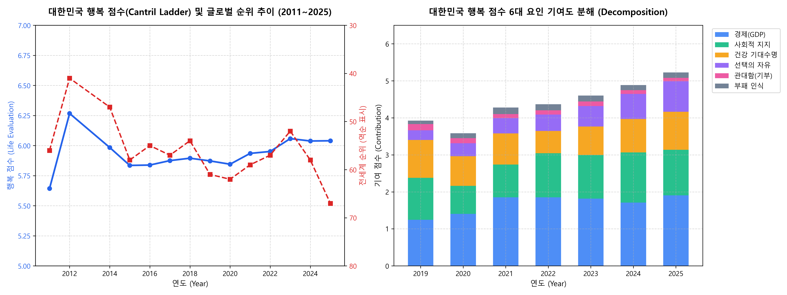

대한민국 행복의 현주소와 역설
세계행복보고서(WHR 2026) 및 장기 패널 데이터를 기반으로 한
삶의 질 결정 요인 분석과 탐색 계획
세계 10위권 경제 대국임에도 전 세계 67위에 머무는 역설적 현실과 초저출산·사회적 고립 원인 실증 탐색
WHR 2026 최신 국가별 기여도 매크로 데이터와 Kaggle 18개년 패널 데이터의 상호보완적 융합
'주관적 안녕감(SWB)' 렌즈를 통해 인지적 평가와 정서적 경험의 괴리를 극복할 실천적 대안 제시
배경 및 문제의식: 경제적 성취 대비 낮은 행복
‘이스털린의 역설(Easterlin Paradox)’ [REF-03]과 한국 사회의 구조적 그늘(초저출산·사회적 고립)
- ✔ 세계 최고 수준의 인프라: 1인당 GDP 3만 5천 달러, 세계 최상위 건강 기대수명(83.6세), 세계 1위권 치안 및 디지털 인프라.
- ✖ 소득 증가와 행복의 탈동조화: 경제는 급성장했으나 삶의 만족도(Cantril Ladder)는 15년간 6.0점 안팎에서 제자리걸음(정체).
- ✖ 초저출산과 사회적 고립: 합계출산율 0.7명대, OECD 최고 자살률, "곤경에 처했을 때 기댈 사람이 없다"는 관계적 단절 심화 [REF-02].
"한국인은 왜 세계에서 가장 빠른 속도로 물질적 풍요를 이루었음에도 불구하고, 세계 최하위 수준의 사회적 지지망과 극심한 성취 압박 속에서 행복의 결핍을 겪고 있는가?"
실측 데이터 진단: 2025 대한민국 행복의 현주소
WHR 2026 원본 데이터 [REF-01]: 2025년 기준 6.040점(67위), 높은 GDP·기대수명 vs 낮은 관대함(0.089)·자유·지지
Cantril Ladder (3개년 평균)
2012년 41위에서 26계단 하락
기대수명(1.028)과 함께 세계 최상위
관대함 0.089, 지지 1.23 (최하위권)
| 연도 (Year) | 전세계 순위 | 행복 점수 | 1인당 GDP 기여 | 사회적 지지 | 건강 기대수명 | 삶의 선택의 자유 | 관대함 (기부) |
|---|---|---|---|---|---|---|---|
| 2025 (최신) | 67위 | 6.040 | 1.906 | 1.230 | 1.028 | 0.825 | 0.089 |
| 2024 | 58위 | 6.038 | 1.709 | 1.357 | 0.903 | 0.678 | 0.100 |
| 2022 | 57위 | 5.951 | 1.853 | 1.188 | 0.603 | 0.446 | 0.112 |
| 2012 (역대 최고) | 41위 | 6.267 | (상대적 가족 및 공동체 유대감이 살아있던 시기) | ||||

핵심 연구 질문 (3대 RQ)
단순 순위 비교를 넘어 구조적 불균형과 인과적 메커니즘을 밝혀내기 위한 3대 질문
행복 결손 영역 분해
OECD 38개국 중 유사 경제 규모(1인당 GDP 3~4만 달러 구간) 선진국 대비 한국의 행복 점수는 정확히 어느 하위 도메인(Factor)에서 얼마만큼의 구조적 결핍(Deficit)이 발생하는가?
15개년 시계열 동학
2011년부터 2025년까지 대한민국의 실질 소득(GDP)과 기대수명은 급격히 증가했음에도 왜 행복 점수는 6.0점 안팎에서 장기 정체되었으며, 요인별 탄력성은 어떻게 변화했는가?
글로벌 클러스터링
글로벌 143개국 데이터 다변량 분석 시, 한국과 가장 유사한 '고소득-고수명 / 저사회적지지-저관대함' 특성을 보이는 비교 대상국은 어디인가? (동아시아 국가군 vs 남유럽 비교)
데이터 사용: WHR 2026과 장기 패널 데이터
글로벌 거시 벤치마크(WHR 2026)와 UN 세계행복보고서(WHR)의 18년 원천 장기 패널 데이터의 상호보완적 활용 계획
• 규모: 전 세계 143개국 2011~2025년 시계열 관측치 (3년 이동평균 지표)
• 활용: 한국의 전 세계 최신 순위(67위) 진단 및 OECD 선진국 대비 구조적 결손 영역(Gap) 정량화
jainaru/world-happiness-report-2024-yearly-updated (Kaggle)• 특성: WHR 공식 보고서의 근간이 되는 갤럽 월드 폴(Gallup) 18개년 실측 원천 패널로, 한국의 2006년부터 2023년까지 매년 단일 측정된 연속 데이터 보유.
Life Ladder(사다리 평가), Log GDP(1인당 소득), Social support(위기 시 기댈 사람), Healthy life expectancy(기대수명), Freedom(선택의 자유), Generosity(기부), Corruption(부패 인식)• ★ 심리적 정서 지표 완비: 일상 속 웃음과 즐거움을 측정한
Positive affect(긍정적 정서) 및 걱정·스트레스·우울을 측정한 Negative affect(부정적 정서)가 함께 포함되어 있어 한국인의 깊은 감정 상태를 직접 분석 가능.
예상 인사이트 & 심리학적 시사점
데이터 실측으로 도출할 핵심 인사이트 2개와 에드 디너의 '주관적 안녕감'으로 본 한국 사회의 시사점 1개
물질적 하드웨어 중심 성장의 한계효용 도달
2011~2025년 사이 한국의 GDP 기여도는 1.25에서 1.91로 가파르게 급상승했으나, 총 행복 점수는 2012년 6.27점에서 2025년 6.04점으로 오히려 하락. 소득 증가가 삶의 만족으로 직결되지 않는 이스털린의 역설이 대한민국에서 완전히 고착화되었음을 실증.
사회적 지지(1.23)와 관대함(0.089)의 극단적 취약
한국인의 행복 순위를 60위권으로 끌어내리는 진짜 원인은 돈이 아니라 "위기 시 기댈 사람이 없고, 나눌 여유가 없다"는 극단적인 각자도생과 사회적 관계망의 단절에 있음을 데이터로 확인.
"머리로는 살 만하다고 생각하지만, 마음은 왜 항상 불안할까?"
행복 심리학의 창시자 에드 디너(Ed Diener)에 따르면, 진짜 행복은 "내 삶이 괜찮다고 생각하는 것(이성적 평가)"뿐만 아니라 "일상에서 자주 웃고(긍정적 감정), 덜 불안한 것(부정적 감정 완화)"이 함께 채워져야 합니다.
한국인은 세계 최고 수준의 성취 덕에 머리로는 6점대로 평가하면서도, 치열한 비교 경쟁 때문에 마음속으로는 늘 만성적인 불안과 피로를 겪고 있습니다.
따라서 행복을 높이려면 단순 소득 증대를 넘어, 실패해도 괜찮다는 '심리적 안전감'과 일상 속에서 편안함과 즐거움을 느낄 수 있는 사회문화적 환경이 절실합니다.
문헌 및 공식 데이터 레퍼런스 매트릭스
본 분석의 학술적 엄밀성을 뒷받침하는 핵심 출처 및 선행 연구 아카이브 (클릭 시 상세 모달 오픈)
Helliwell et al. (2026). 글로벌 143개국 행복 평가(Cantril Ladder) 및 6대 기여 요인 공식 데이터셋.
통계청 통계개발원. 고용, 여가, 공동체, 가족, 신뢰도 등 71개 한국형 삶의 질 지표 종합 보고서.
Richard Easterlin. 소득이 일정 수준을 넘어서면 행복이 지속 증가하지 않는다는 '이스털린의 역설' 원전.
Martin Seligman. 긍정 정서(P), 몰입(E), 관계(R), 의미(M), 성취(A) 5대 차원 모델 (한국의 성취 과잉 및 관계/정서 결핍 설명).